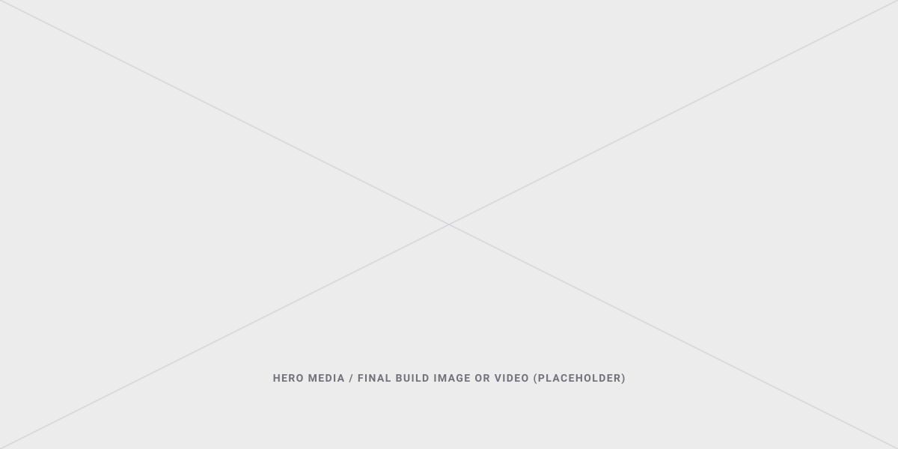
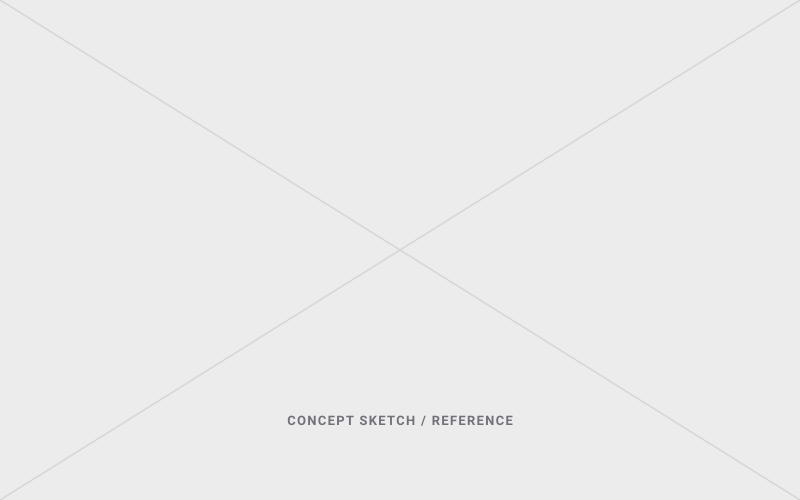
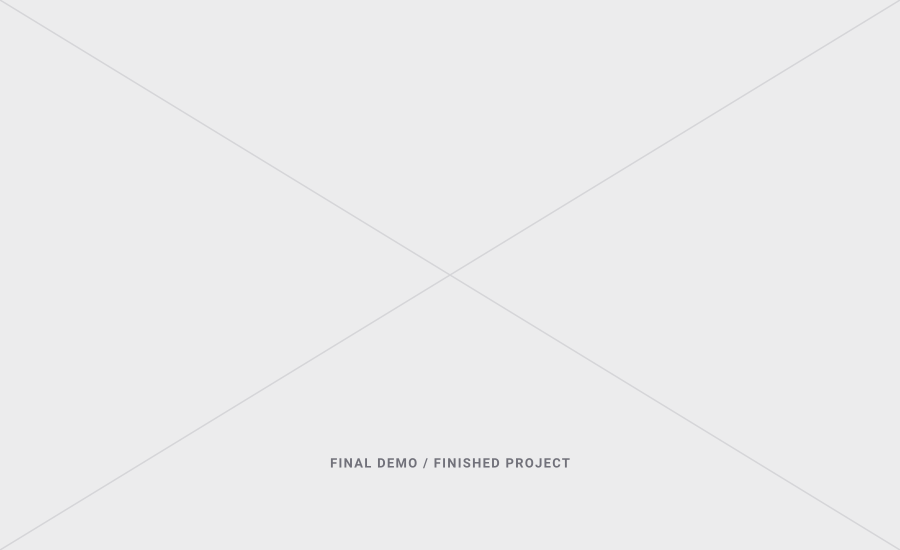

FAB LAB / FINAL PROJECT
Project title goes here
A short, clear description of the project and what it intends to explore.

01 / CONCEPT & INSPIRATION
The idea behind the project
Project background, inspiration, intended functions and initial thinking. Text and imagery share the space rather than forming a long stacked gallery.
REFERENCE & CONTEXT
Optional short supporting detail / reference

02 / DEVELOPMENT / DOCUMENTATION
Explore the development
Horizontal browsing — select an entry to open the full overlay.
SCROLL >
03 / FINAL OUTCOME
What was built
Final result, brief explanation of how it works, key outcomes and links to project files. Avoid repeating the initial concept.
Key Features & Principles
- Parametric physical housing fabricated with digital tools (laser cutting & 3D printing).
- Custom milled micro-controller PCB supporting embedded sensors and actuation.
- Iterative testing pipeline balancing thermal, mechanical, and power budgets.
Technical Files & Downloads
PROJECT ARCHIVE / REPOSITORY (.ZIP) Download Files ↓Concluding Reflection
Brief final assessment of fabrication constraints, materials efficacy, and prospective next iterations for the system.
